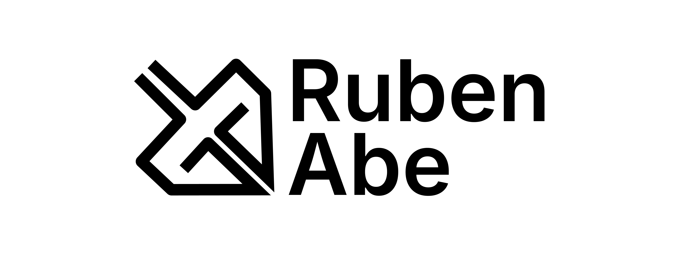

Selected Works
Case studies across product design, research, and web systems.
A focused collection of HCI, UX research, interface design, design system, and client-facing web work.

Product Design
QCook
Food planning and cooking app prototype focused on practical meal decisions.

Design System
RubenAbe Design System
A visual system and responsive website built for portfolio structure and identity.

Info. Architecture
MCA Chicago IA Redesign
Navigation redesign using content inventory, card sorting, tree testing, and wireframes.
Artworks
Illustration and visual storytelling.
Selected artwork, character-driven visuals, and illustration work connected to my wider visual practice.
View ArtworkResume
Experience, tools, and background.
Resume section will include a clean PDF view and download once the final version is ready.
View Resume